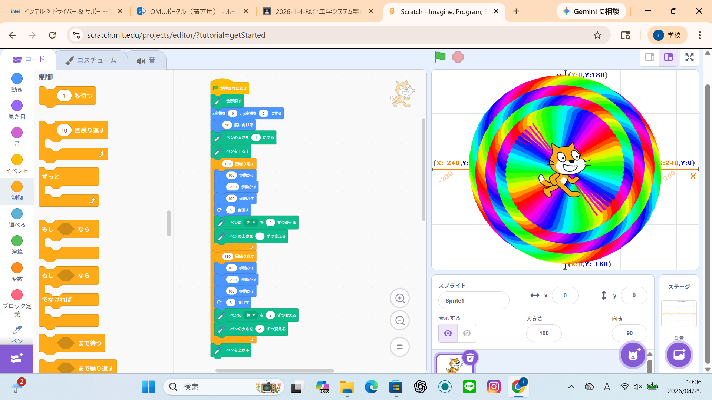
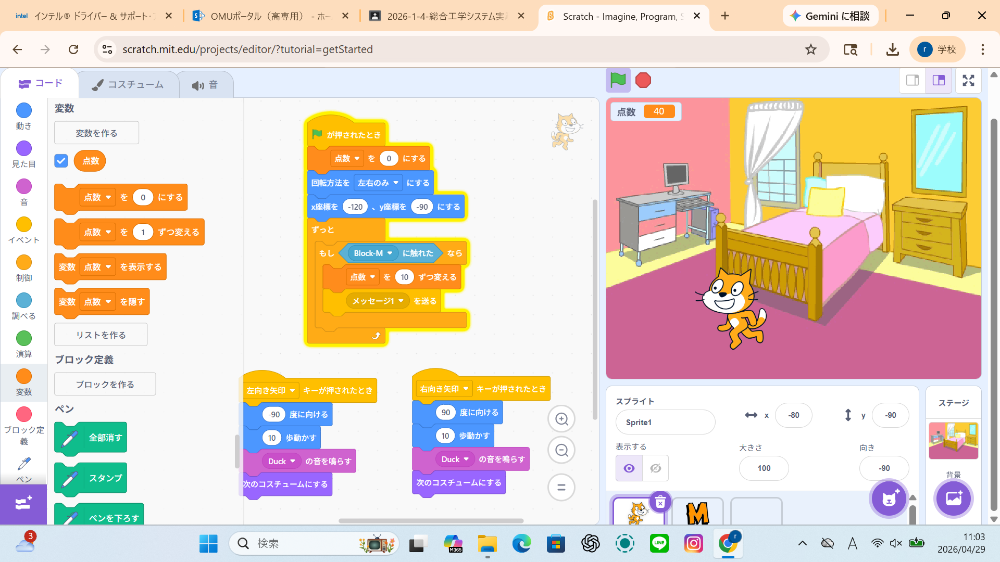

1週目のレポート ： 公大高専１年実習I-1
4a班18番 simo
第1週目
1-1 サイエンスアート

1.内容
スクラッチ上の猫を動かしてスクラッチの拡張機能でペンを入れて猫が動くところに線を引くことができるということを利用したサイエンスアートを学びました。
2.感想
スクラッチの猫を動かし、拡張機能のペンで軌跡を描くサイエンスアートを学ぶ上でプログラミングの指示通りに美しい図形が描ける楽しさと、科学と芸術の融合に感動しました。
1-2 ゲーム

1.内容
スクラッチの猫を移動させ上から降ってくるリンゴをスクラッチが反応して、得点が入るゲームの作り方をまなびました。
2.感想
スクラッチの猫を動かして上から落ちてくるリンゴをキャッチし、得点が入るゲームの作り方を学び、条件分岐や変数（得点）の仕組みがよく分かり、ゲーム開発の基礎を楽しく学べました。
1-3 ホームページ作成
私のホームページ
1.内容
ホームページ作成では自分用に世界中の人に見られる、ホームページのつくりかたをまなぶことができました。
2.感想
ホームページ作成では、世界中の人に自分専用のページを見てもらえる仕組みや作り方を学びました。デザインや発信の楽しさを知り、Webを通じて世界とつながる可能性を実感できました。
各ページへのリンク
1週目のレポート
2週目のレポート
3週目のレポート
私のホームページ